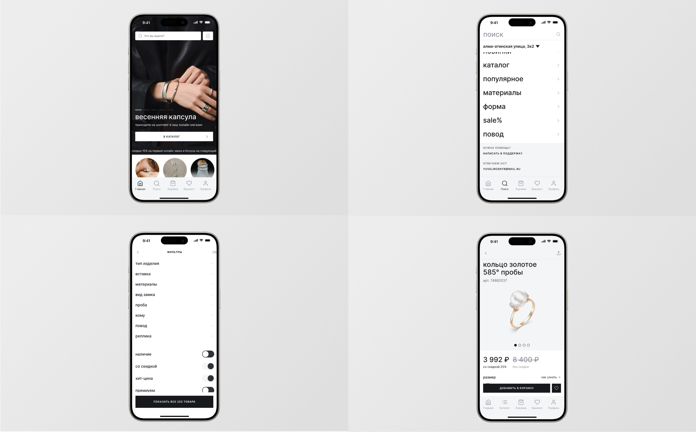
- Создан:
- 2015–2023, Туристер
- Тип:
- Мобильное приложение
- Role:
- Арт-дирекция, Продуктовый дизайн, UX/UI
- Ссылки:
- AppStore, Google Play
Дизайн мобильного приложения Туристер Эксперты, где можно найти частного гида для экскурсии или многодневного тура, переводчика по всему миру, а также множество других туристических услуг.
Задача включала в себя создание сервиса с нуля и проводилась поэтапно, начиная с проверки гипотез и построения пользовательских сценариев.
Была сделана разработка архитектуры, сценариев и продуктовый дизайн мобильного приложения, включая UX/UI дизайн и анимацию всех экранов. А также контроль реализации внутренней командой разработки.
Приложение опубликовано в AppStore и Google Play и имеет подавляющее количество восторженных отзывов от клиентов.

Главный экран
Первый магазин «Золотого Яблока» в формате парфюмерного супермаркета открылся в Екатеринбурге в 2004 году. С тех пор сеть выросла до 25 магазинов и в этом году планирует занять второе место по товарообороту среди ретейлеров парфюмерии и косметики в России. Каждый магазин компании по эффективности работы приравнивается к 15–20 магазинам других ретейлеров и занимает первое место в стране по выручке с одного квадратного метра.
Осенью 2018 года сеть запустила собственный интернет-магазин. На сегодняшний момент он занимает первое место по выручке среди российских e-com компаний бьюти-индустрии. В марте 2021 года мобильное приложение «Золотое Яблоко» заняло первое место в категории «Покупки» в App Store.
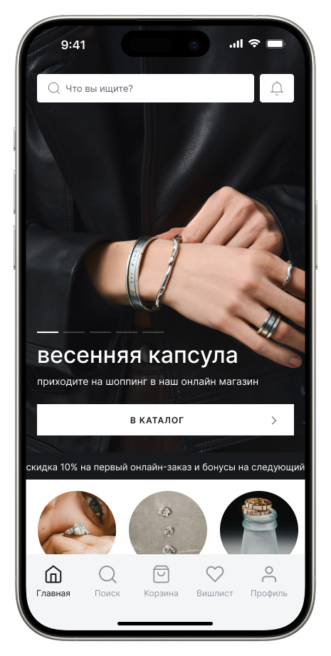
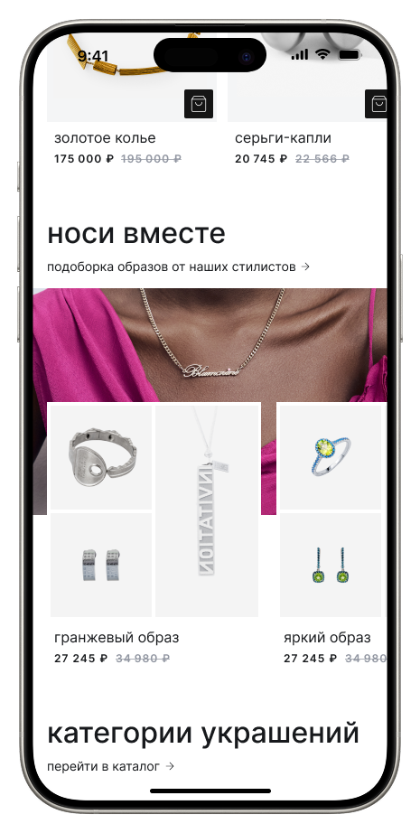
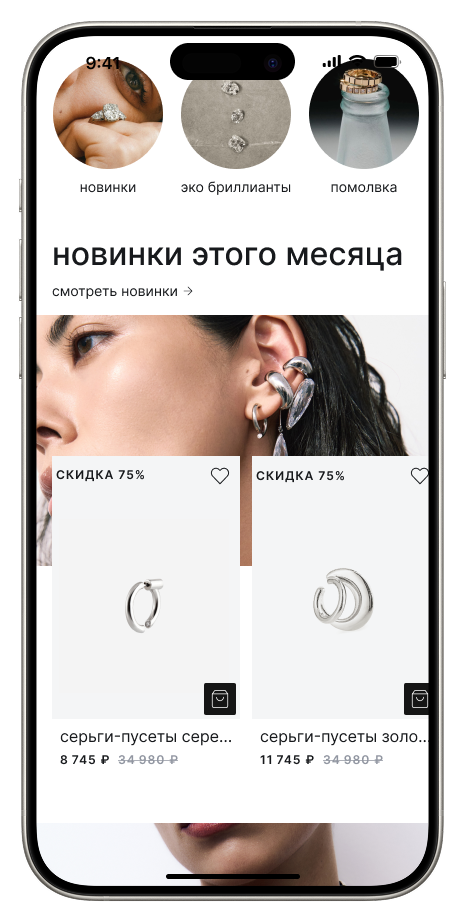
Каталог
Hero вместо сетки — покупательница ищет «своё», а не серьги. Чипы по сценариям — наш «Сценарный вход» из скоупа, гипотеза с самым высоким ICE. «Носи вместе» — стилевые комплекты на главной.
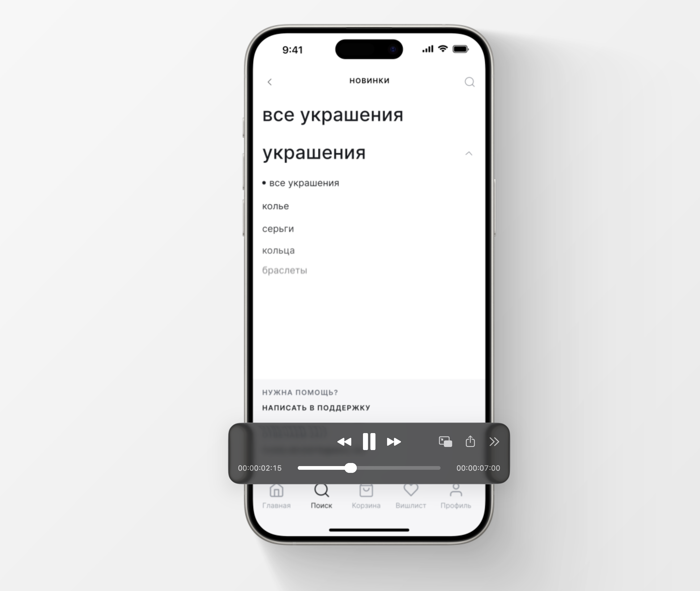

Каталог
Hero вместо сетки — покупательница ищет «своё», а не серьги. Чипы по сценариям — наш «Сценарный вход» из скоупа, гипотеза с самым высоким ICE. «Носи вместе» — стилевые комплекты на главной.
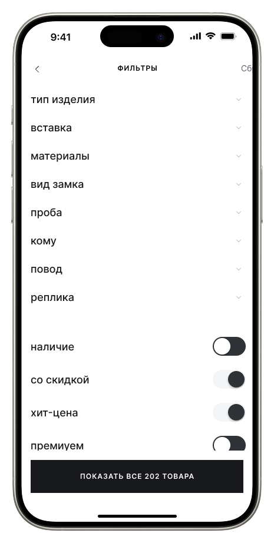
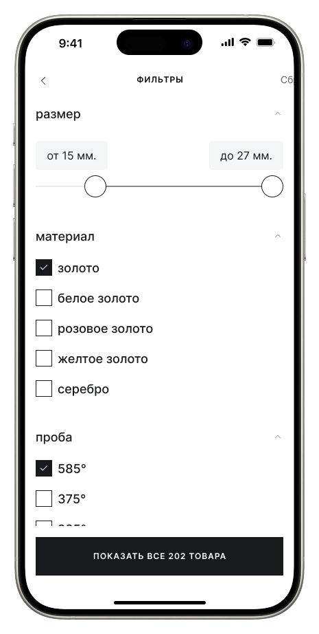
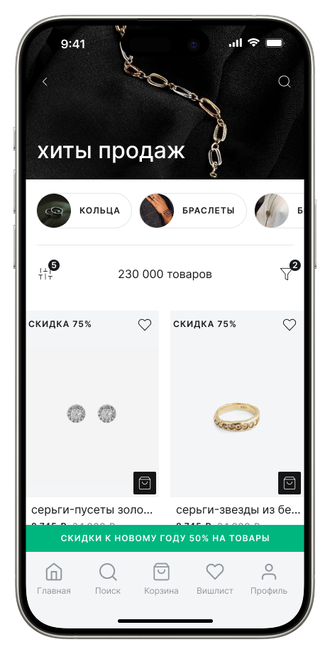
Карточка товара
Hero вместо сетки — покупательница ищет «своё», а не серьги. Чипы по сценариям — наш «Сценарный вход» из скоупа, гипотеза с самым высоким ICE. «Носи вместе» — стилевые комплекты на главной.

Hero вместо сетки — покупательница ищет «своё», а не серьги. Чипы по сценариям — наш «Сценарный вход» из скоупа, гипотеза с самым высоким ICE. «Носи вместе» — стилевые комплекты на главной.
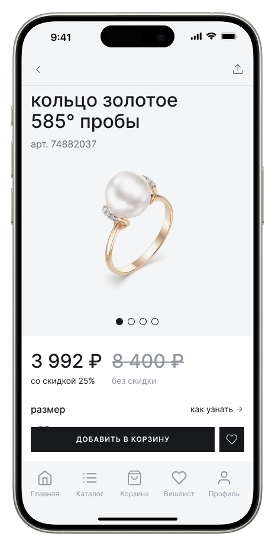
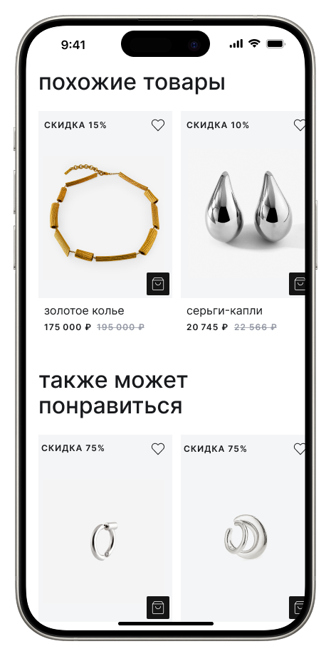
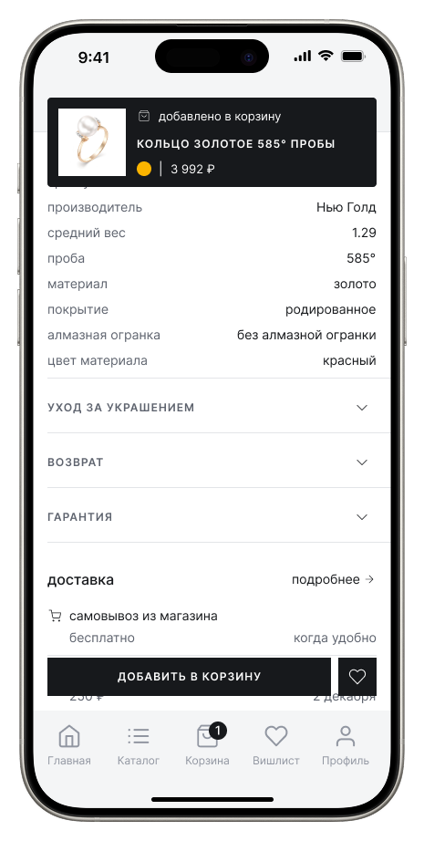
Чекаут
Hero вместо сетки — покупательница ищет «своё», а не серьги. Чипы по сценариям — наш «Сценарный вход» из скоупа, гипотеза с самым высоким ICE. «Носи вместе» — стилевые комплекты на главной.

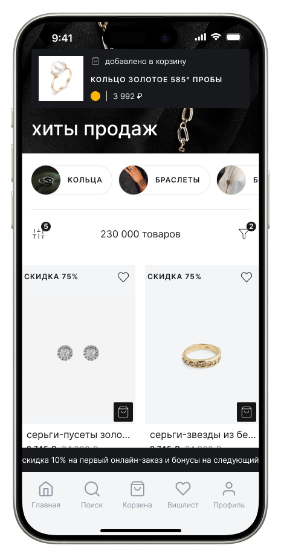
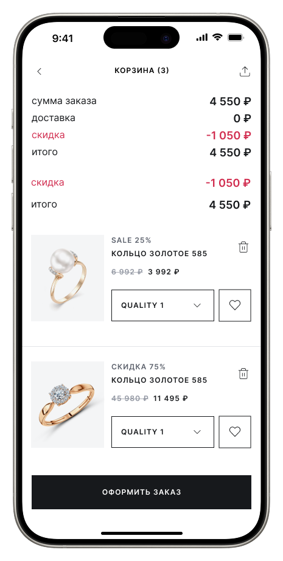
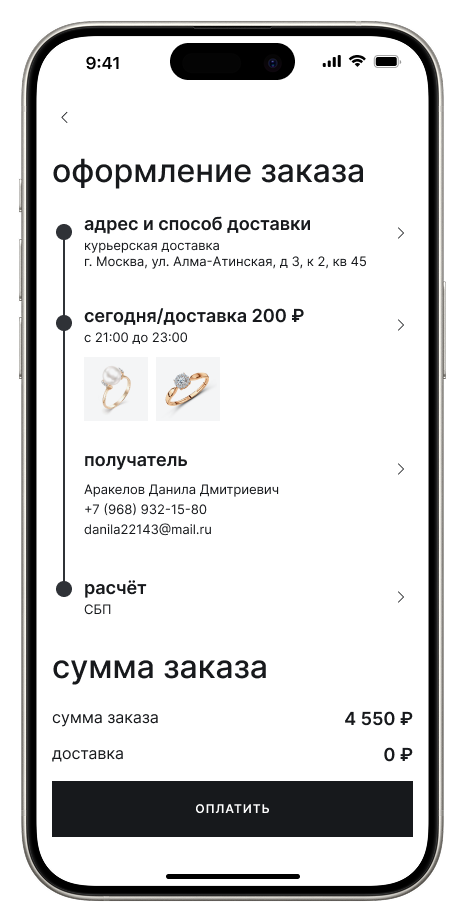
Юзер тест
Hero вместо сетки — покупательница ищет «своё», а не серьги. Чипы по сценариям — наш «Сценарный вход» из скоупа, гипотеза с самым высоким ICE. «Носи вместе» — стилевые комплекты на главной.

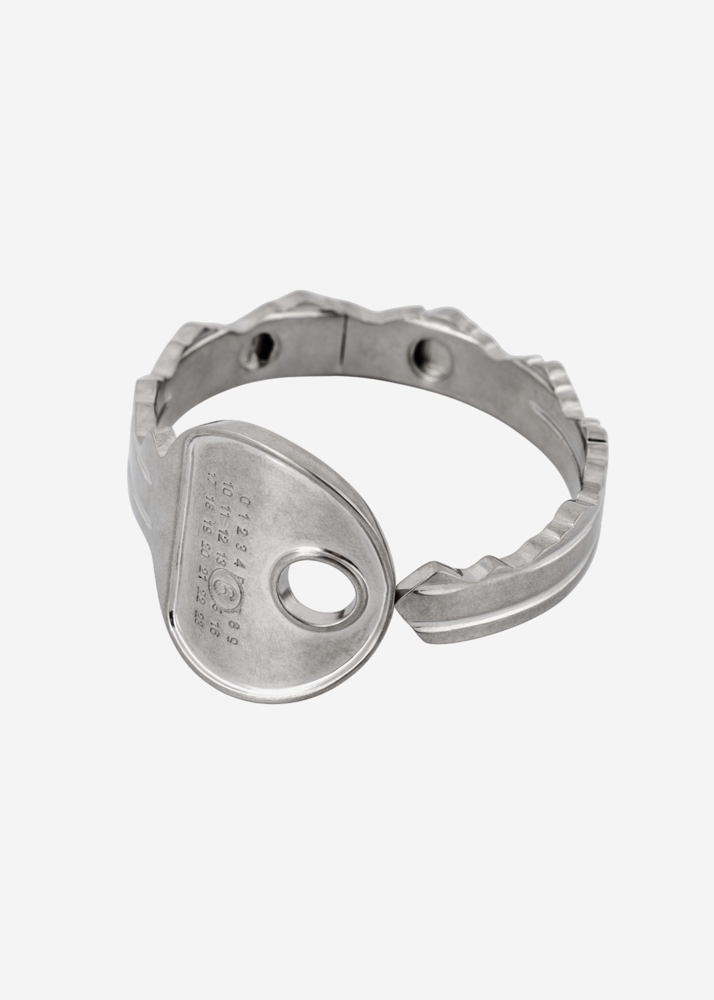
Эксперты Туристера помогут вам найти гида для экскурсии или многодневного тура, переводчика по всему миру.
Расширен функционал как для пользователя, так и для гида и туристических компаний, улучшены пользовательские сценарии, чат, заказы, добавлен календарь доступности и сбор NPS для улучшения обратной связи и пользовательского опыта.
Обновлены экраны экскурсий и услуг. Добавлен раздел избранное и возможность поделиться гидом и услугой, а также общая заявка по направлению для сообщества.
Также были обновлены фильтры и сортировки контента, для более гибкого поиска, добавлена система контекстного поиска и рекомендательных предложений, исходя из предыдущих заказов и пользовательских запросов. Добавлены многодневные туры и маршруты, с картами и описанием.